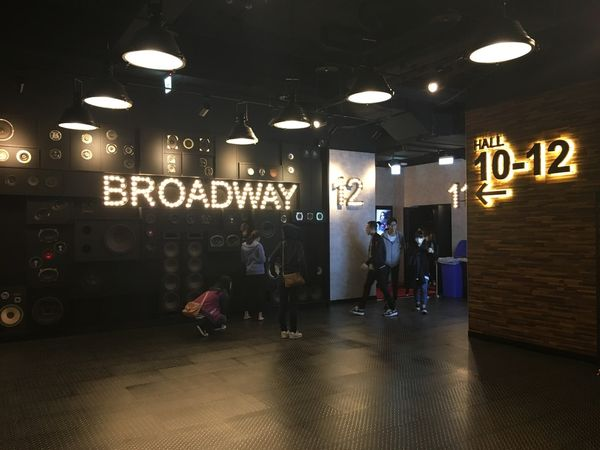

國立臺灣科技大學
校本部位於臺北市大安區基隆路，原校名國立臺灣工業技術學院，成立於1974年8月1日，建校之目的在因應臺灣經濟與工業迅速發展之需求，以培養頂尖高科技工程及管理人才為目標，為國立臺灣大學系統成員之一。
國立臺灣大學
是臺灣第一所現代綜合大學，為臺灣學生人數最多的高等教育機構。其始於1928年日治時代中期創校的「臺北帝國大學」，1945年中華民國接收臺灣後經改制與兩次易名始用現名。現設有11個學院、3個專業學院，下分54個學系、109個研究所；另設有30餘個各學術領域之國家級或校級研究中心，以及進修推廣部、臺大醫院等附屬機構，是全臺唯一學生人數超過三萬的高等教育學校。
公館商圈
公館為台灣台北市中正區、大安區地名。以台北捷運新店線公館站為中心，區內主要地標有國立台灣大學，以及附近的國立台灣科技大學、國立台灣師範大學公館校區、水源市場、台北自來水園區和台電大樓，商業發達。

百老匯影城
百老匯影城於2016年底重新裝修，目前擁有11個放映廳，11個放映廳全部升級 Dolby7.1 聲道，1.2.5.7.10.11廳升級為商務廳配備沙發座椅，並於第一排安排了電動座椅，影城全享均一價，觀賞商務廳不須加價。11個放映廳精選首輪商業及藝術電影，歡迎您來體驗。